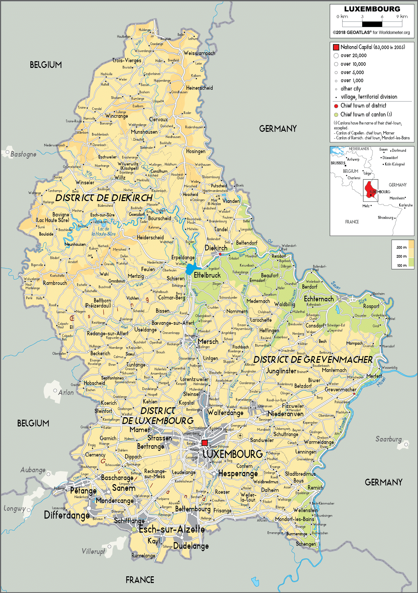

The Problem
Ettelbruck is a city that is prone to flooding due to its location near the river. The city has suffered from several devastating floods in the past, causing significant damage to property and putting lives at risk.
The Solution
Operation Ettel2042 proposes a bold solution to this problem: flooding the city deliberately. By flooding the city on purpose, we can prevent more serious floods in the future and protect the lives and property of the residents of Ettelbruck.
The Benefits
- Protects lives and property
- Prevents more serious floods in the future
- Creates a new habitat for wildlife
- Opportunities for new recreational activities such as boating and fishing
- Economic benefits of turning it into a luxus resort thus increasing tourism to Luxemburg
Visual Representation
Below is an aerial view of Ettelbruck after the completion of Operation Ettel2042:
Conclusion
While flooding a city may seem counterintuitive, in the case of Ettelbruck it is a necessary step to protect the lives and property of its residents. Operation Ettel2042 proposes a sustainable and long-term solution to a problem that has plagued the city for decades.